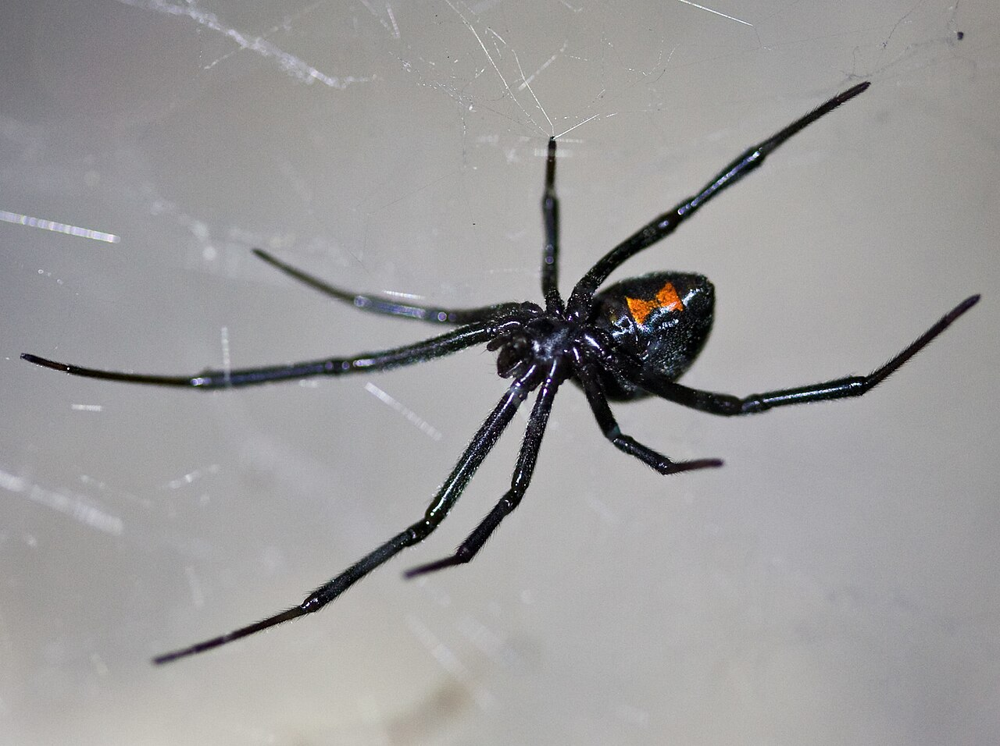

Many people find spiders unsettling, and some even fear them. However, these marvellous arachnids are diverse, resourceful, and play a crucial role in our ecosystem by controlling insect populations and protecting crops. Spiders come in a vast array of shapes and sizes: some resemble flowers, others mimic bird droppings; some are as small as a pinhead, while others can be as large as a human hand. Their mating rituals can be quite charming and their hunting techniques are ingenious, from creating intricate web designs to laying ground traps and even pretending to be prey before pouncing.
